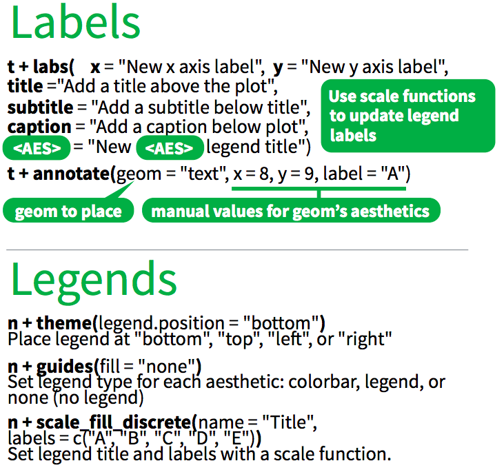

help("diamonds")
head(diamonds)
glimpse(diamonds)
View(diamonds)Exercises-04
Contact Info
Suja Jagannathan sujatha.jagannathan@cuanschutz.edu
Office Hours
Use https://calendly.com/molb7950 to schedule a time with a TA.
Learning Objectives for the R Bootcamp
- Follow best coding practices (class 1)
- Know the fundamentals of R programming (class 1)
- Become familiar with “tidyverse” suite of packages
- tidyr: “Tidy” a messy dataset (class 2)
- dplyr: Transform data to derive new information (class 3)
- ggplot2: Visualize and communicate results (class 4)
- Practice reproducible analysis using Rmarkdown (Rigor & Reproducibility) (classes 1-5)
Today’s class outline - class 4
- Introduce ggplot2 & today’s datasets (Exercise 1)
- Understand the basics of ggplot2 (Exercise 2, 3)
- Create more complex plots
- Geom functions (Exercise 4-8)
- Geom_point properties (Exercise 9)
- Position adjustments (Exercise 10)
- Coordinate and Scale Functions (Exercise 11)
- Zooming into a plot (Exercise 12)
- Faceting (Exercise 13)
- Themes (Exercise 14)
- Labels & Legends (Exercise 15)
- Additional points
- Adding lines to plots (Exercise 16)
- Making multi-panel figures (Exercise 17)
- Saving a plot (Exercise 18)
- Homework instructions
ggplot2
ggplot2 is based on the “grammar of graphics”, the idea that you can build every graph from the same components: a data set, a coordinate system, and geoms
Today’s datasets
- In this class, we will use one of the datasets that come with the
ggplot2package.
ggplot2::diamondsdata frame contains data about 87 characters from Starwars
Getting familiar with the data - Exercise 1
The basic syntax of ggplot()
ggplot(): build plots piece by piece
The concept of ggplot divides a plot into three different fundamental parts:
plot = data + coordinate-system + geometry.
data: a data frame
coordinate-system: specify x and y variables
geometry: specify type of plots - histogram, boxplot, line, density, dotplot, bar, etc.

aesthetics can map variables in the data to visual properties of the geom (aesthetics) like size, color, and x and y locations to make the plot more information rich.

Making a plot step-by-step (Exercise 2)
# initialize with data
ggplot(data = diamonds) # specify which dataframe to use - no plot yet
# specify the coordinate system
ggplot(
data = diamonds,
mapping = aes(x = carat, y = price)
) # data to map onto x and y axes
# specify geometry
ggplot(
data = diamonds,
mapping = aes(x = carat, y = price)
) +
geom_point() # `geom` is 'geom_point()'
######### Note: the position of `+` is important ##########
# map aesthetics to other variables
ggplot(
data = diamonds,
mapping = aes(x = carat, y = price, color = cut, size = carat)
) +
geom_point()
ggplot(
data = diamonds,
mapping = aes(x = carat, y = price, color = cut, size = carat)
) +
geom_point(alpha = 0.2) # adjusting transparency of pointsLooking under the hood of ggplot (Exercise 3)
# initialize with data
p1 <- ggplot(data = diamonds) # specify which dataframe to use - no plot yet
# specify the coordinate system
p2 <- ggplot(
data = diamonds,
mapping = aes(x = carat, y = price)
) # data to map onto x and y axes
# specify geometry
p3 <- ggplot(
data = diamonds,
mapping = aes(x = carat, y = price)
) +
geom_point() # `geom` is 'geom_boxplot()'
# map aesthetics to other variables
p4 <- ggplot(
data = diamonds,
mapping = aes(x = carat, y = price, color = cut, size = carat)
) +
geom_point() # `geom` is 'geom_boxplot()'
p5 <- ggplot(
data = diamonds,
mapping = aes(x = carat, y = price, color = cut, size = carat)
) +
geom_point(alpha = 0.2) # `geom` is 'geom_boxplot()'
typeof(p1)
names(p1)
head(p1$data)
summary(p1)
summary(p2)
summary(p3)
summary(p4)
summary(p5)ggplot is overkill for simple plots, but powerfully simple in making complex plots
ggplot(
data = diamonds,
mapping = aes(x = carat)
) +
geom_histogram() # histogram
## why can't I just do this?
hist(diamonds$carat)You can. But the advantage of ggplot is that it is equally “simple” to make basic and complex plots. The underlying grammar lets you exquisitly customize the appearance of your plot and make publishable figures.
Questions?
Create more complex plots

Geom function
- Use a geom function to represent data points, use the geom
<80><99>s aesthetic properties to represent variables. - Each function returns a layer.
- There are a LOT of geom functions in ggplot that are specific to plots with 1, 2, or 3 variables (i.e. if you really need to plot 3 variables - better to use aesthetics instead)
Geom functions for one variable - Exercise 4

# bar plot
ggplot(
data = diamonds,
mapping = aes(x = cut)
) +
geom_bar() # bar
ggplot(
data = diamonds,
mapping = aes(x = cut, fill = clarity)
) +
geom_bar()
# density plot
ggplot(
data = diamonds,
mapping = aes(x = carat)
) +
geom_density() # density
# color the density plot
ggplot(
data = diamonds,
mapping = aes(x = carat)
) +
geom_density(fill = "tomato1")
# plot subsets by mapping `fill` to `cut`
ggplot(
data = diamonds,
mapping = aes(x = carat, fill = cut)
) +
geom_density(alpha = 0.8)
# use ggridges to plot subsets in a staggered fashion!
ggplot(
data = diamonds,
mapping = aes(carat, y = cut, fill = cut)
) +
geom_density_ridges() # function from the ggridges package, NOT ggplot2Geom functions for two variables
With two variables, depending on the nature of the data, you can have different kinds of geoms: - discrete x, continuous y - continuous x, continuous y - continuous bivariate - & others (check out the cheatsheet!)
discrete x, continuous y - Exercise 5

# column plot
ggplot(
data = diamonds,
mapping = aes(x = cut, y = price)
) +
geom_col()
options(scipen = 10000) # disables scientific notation - only have to type once for the whole Rmd
ggplot(
data = diamonds,
mapping = aes(x = cut, y = price)
) +
geom_col()
# box plot
ggplot(
data = diamonds,
mapping = aes(x = cut, y = price)
) +
geom_boxplot()
# box plot with fill color by cut
ggplot(
data = diamonds,
mapping = aes(x = cut, y = price, fill = cut)
) +
geom_boxplot()
# violin plot with fill color by cut
ggplot(
data = diamonds,
mapping = aes(x = cut, y = price, fill = cut)
) +
geom_violin()continuous x, continuous y - Exercise 6

# subset diamonds to see points better
diamonds_subset <- diamonds %>% sample_n(size = 1000)
# scatter plot
ggplot(
data = diamonds_subset,
mapping = aes(x = carat, y = price, color = cut)
) +
geom_point()
# geom_smooth
ggplot(
data = diamonds_subset,
mapping = aes(x = carat, y = price, color = cut)
) +
geom_smooth()
# combining geoms - 1
ggplot(
data = diamonds_subset,
mapping = aes(x = carat, y = price, color = cut)
) +
geom_point() +
geom_smooth()
# combining geoms - 2
ggplot(
data = diamonds_subset,
mapping = aes(x = carat, y = price, color = cut)
) +
geom_point() +
geom_rug()continuous bivariate - Exercise 7

# scatter plot
ggplot(
data = diamonds,
mapping = aes(x = carat, y = price)
) +
geom_point()
ggplot(
data = diamonds,
mapping = aes(x = carat, y = price)
) +
geom_hex()Geom functions for three variables - Exercise 8

One example with geom_tile()
ggplot(
data = diamonds,
mapping = aes(x = cut, y = carat, fill = price)
) +
geom_tile(colour = "white") +
scale_fill_gradientn(colors = c("red", "white", "blue"))Questions?
shape, size, fill, color, and transparency - Exercise 9
R has 25 built in shapes that are identified by numbers. There are some seeming duplicates: for example, 0, 15, and 22 are all squares. The difference comes from the interaction of the colour and fill aesthetics. The hollow shapes (0

ggplot(
data = diamonds_subset,
mapping = aes(x = carat, y = price)
) +
geom_point(aes(fill = cut, size = depth),
alpha = 0.8,
shape = 24,
color = "white"
)Note that aesthetics can also be defined within geoms
Position adjustments - Exercise 10
Position adjustments determine how to arrange geoms that would otherwise occupy the same space.

ggplot(
data = diamonds,
mapping = aes(x = cut, fill = clarity)
) +
geom_bar()
ggplot(
data = diamonds,
mapping = aes(x = cut, fill = clarity)
) +
geom_bar(position = "dodge")Jitter can be used to avoid over-plotting along with geom_point.
Coordinate and Scale Functions - Exercise 11
We won’t go into these functions too much today, but here is a brief overview:
- The coordinate system determines how the x and y aesthetics combine to position elements in the plot. The default coordinate system is Cartesian ( coord_cartesian() ), which can be tweaked with coord_map() , coord_fixed() , coord_flip() , and coord_trans() , or completely replaced with coord_polar()
- Scales control the details of how data values are translated to visual properties. There are 20+ scale functions. We will look at one; the ggplot2 cheatsheet is your friend for the rest.
# coord transform
ggplot(diamonds, aes(carat, price)) +
geom_point() +
coord_trans(x = "log10")
# coord_flip
ggplot(
data = diamonds,
mapping = aes(x = cut)
) +
geom_bar() # bar
ggplot(
data = diamonds,
mapping = aes(x = cut)
) +
geom_bar() +
coord_flip()
# scales
ggplot(diamonds, aes(carat, price)) +
geom_point() +
scale_x_log10()Brief aside: ggplot can also handle on-the-fly data transformations like below.
# log transformed carat and USD converted to CAD
ggplot(diamonds, aes(log10(carat), price * 1.32)) +
geom_point()Zooming into a plot - Exercise 12
One might often want to change the limits of x or y axes to zoom in. There are multiple ways to do this.
ggplot(diamonds, aes(carat, price)) +
geom_point() +
coord_cartesian(xlim = c(0, 2), ylim = c(0, 5000))
ggplot(diamonds, aes(carat, price)) +
geom_point() +
xlim(0, 2) +
ylim(0, 5000)Questions?
Faceting to plot subsets of data into separate panels - Exercise 13
Facets divide a plot into subplots based on the values of one or more discrete variables.

# density plot for data subsets
ggplot(
data = diamonds,
mapping = aes(x = carat, fill = cut)
) +
geom_density(alpha = 0.8)
# density plot with facets
ggplot(
data = diamonds,
mapping = aes(x = log(price), fill = cut)
) +
geom_density(color = "black") +
facet_wrap(~cut, nrow = 1)
# scatter plot with facets
ggplot(
data = diamonds,
mapping = aes(x = carat, y = price, color = cut)
) +
geom_point(alpha = .05) +
facet_wrap(~cut, nrow = 1)Themes - Exercise 14
Themes can significantly affect the appearance of your plot. Thanksfully, there are a lot to choose from.

# default theme
ggplot(
data = diamonds_subset,
mapping = aes(x = carat, y = price, color = cut)
) +
geom_point(alpha = 0.8)
# theme black & white
ggplot(
data = diamonds_subset,
mapping = aes(x = carat, y = price, color = cut)
) +
geom_point(alpha = 0.8) +
theme_bw()
# theme few
ggplot(
data = diamonds_subset,
mapping = aes(x = carat, y = price, color = cut)
) +
geom_point(alpha = 0.8) +
theme_few()
# theme wsj
ggplot(
data = diamonds_subset,
mapping = aes(x = carat, y = price, color = cut)
) +
geom_point(alpha = 0.8) +
theme_wsj()
# theme economist
ggplot(
data = diamonds_subset,
mapping = aes(x = carat, y = price, color = cut)
) +
geom_point(alpha = 0.8) +
theme_economist()You can also customize pre-existing themes
mytheme <- theme_minimal(base_size = 15) +
theme(
aspect.ratio = 1,
panel.background =
element_rect(
colour = "black",
size = 1
)
)
ggplot(
data = diamonds_subset,
mapping = aes(x = carat, y = price, color = cut)
) +
geom_point(alpha = 0.8) +
mytheme # notice the lack of parantheses, because this is an object, not a functionLabels & Legends - Exercise 15

ggplot(
data = diamonds,
mapping = aes(x = cut, y = log(price), fill = cut)
) +
geom_boxplot() +
labs(
y = "Price (log scale)", x = "Cut", color = "Cut",
title = "Distribution of diamond prices by cut",
subtitle = "Data come from a random sample of 1000 diamonds",
caption = "Source: diamonds dataset from ggplot2"
) +
annotate(geom = "text", x = 1, y = 5, label = "Random text") +
theme_bw()Questions?
Additional points
How to add a line to a plot? (Exercise 16)
p <- ggplot(
data = diamonds_subset,
mapping = aes(x = carat, y = price, color = cut)
) +
geom_point(alpha = 0.8) +
theme_few()
p + geom_line()
p + geom_hline(aes(yintercept = 5000))
p + geom_vline(aes(xintercept = 2))
p + geom_smooth(method = lm)
p + geom_abline(aes(intercept = 0.5, slope = 5000))How to combine multiple plots into a figure? (Exercise 17)
plot1 <- p
plot2 <- p + geom_hline(aes(yintercept = 5000))
plot3 <- p + geom_vline(aes(xintercept = 2))
plot4 <- p + geom_abline(aes(intercept = 0.5, slope = 5000))
all_plots <- plot_grid(plot1, plot2, plot3, plot4, labels = c("A", "B", "C", "D"), nrow = 2)
all_plots
# we have 4 legends, which is too many - can they be removed?
# Yes, but it is not exactly straightforward
legend <- get_legend(plot1 + theme(legend.position = "bottom"))
plot1 <- p + theme(legend.position = "none")
plot2 <- p + geom_hline(aes(yintercept = 5000)) + theme(legend.position = "none")
plot3 <- p + geom_vline(aes(xintercept = 2)) + theme(legend.position = "none")
plot4 <- p + geom_abline(aes(intercept = 0.5, slope = 5000)) + theme(legend.position = "none")
all_plots <- plot_grid(plot1, plot2, plot3, plot4, labels = c("A", "B", "C", "D"), nrow = 2)
plot_final <- plot_grid(all_plots, legend, ncol = 1, rel_heights = c(1, .1))
plot_finalMore information on using plot_grid (from package cowplot) is here
Saving plots (Exercise 18)
ggsave("img/plot_final.png", width = 5, height = 5)
# Saves last plot as 5<e2><80><99> x 5<e2><80><99> file named "plot_final.png" in working directory. Matches file type to file extensionThe Final Problem Set and Grading Rubric
- The final problem set assignment will be posted by 4pm today (i.e. not at noon)
- It is due Monday, August 31, by noon
- You can work on the assignment in class tomorrow - which will be used for review and answering questions
- Grading rubric will be listed at the beginning of the problem set.
Acknowledgements
The material for this class was heavily borrowed from: * R for data science by Hadley Wickham: https://r4ds.had.co.nz/index.html * TheRBootcamp: https://therbootcamp.github.io/BaselRBootcamp_2018April/_sessions/D3S2_PlottingI/PlottingI_practical_answers.html
Further Reading & Resources
- R for data science https://r4ds.had.co.nz/index.html
- Advanced R by Hadley Wickam https://adv-r.hadley.nz/
- Data Science with R by Garrett Grolemund https://garrettgman.github.io/tidying/
- ggplot2 reference: https://ggplot2.tidyverse.org/reference/
- ggthemes: https://yutannihilation.github.io/allYourFigureAreBelongToUs/ggthemes/